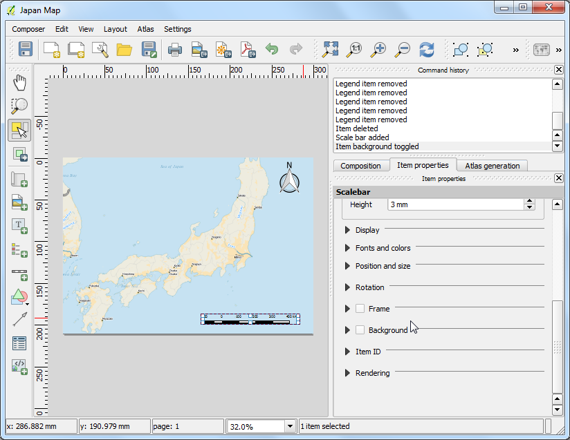
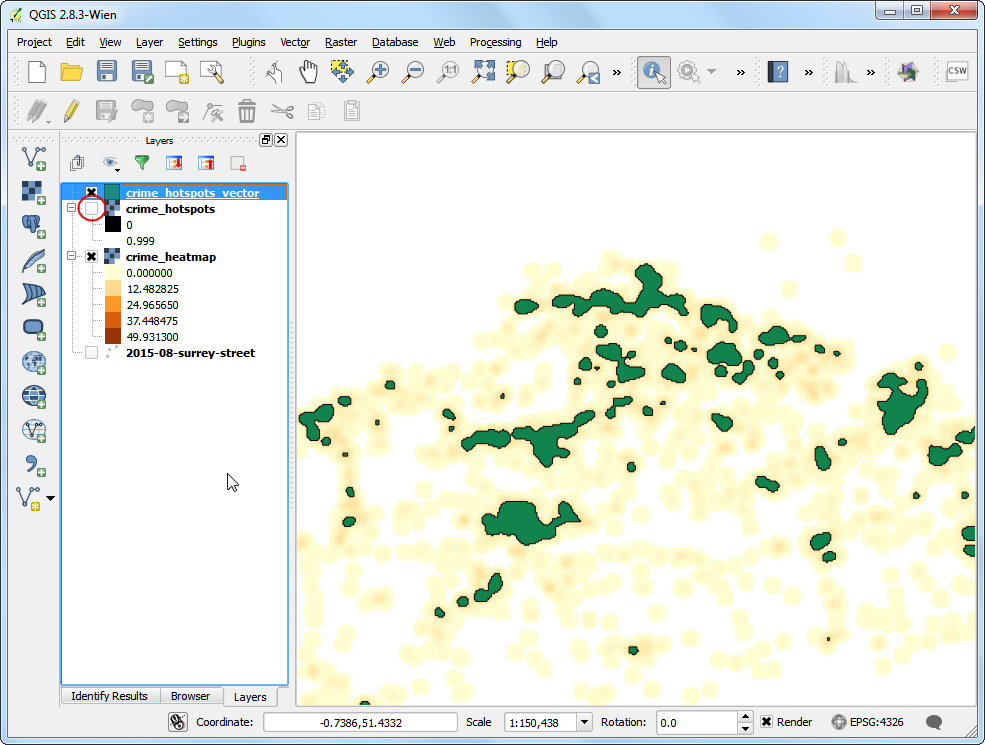

디지타이징 맵 데이터
[ Download PDF A4 Letter ]
디지타이징은 GIS 전문가가 반드시 해야할 가장 일반적인 작업 중 하나입니다. 종종 *GIS time*의 많은 시간이 분석에 사용할 벡터 레이어를 만들기 위해 래스터 데이터에서 디지타이징하는데 소비합니다. 이 예제에서는 QGIS가 강력한 디지타이징 및 편집기능을 스크린 상에서 수행하는 기능을 알아보도록 하겠습니다.
과업 개요
래스터 지형도를 사용하여 공원 근처에 있는 객체를 표현하는 몇개의 벡터 레이어 만들어 보겠습니다.
과정
메뉴 레이어 –> 래스터 레이어 추가 :menuselection:`Layer –> Add Raster Layer`로 갑니다. 다운로드한 ``BX24_GeoTifv1-02.tif``를 찾고 열기 :guilabel:`Open`를 클릭합니다.

이 파일은 대용량 래스터 파일로 지도에서 줌 혹은 팬 기능을 사용하면 이미지를 구현하는데 시간이 걸린다는 것을 알게될 것입니다. QGIS는 **Image Pyramids**기능을 사용하여 래스터로딩 속도를 단축하는 간편한 해결책을 제공합니다. QGIS는 다른 해상도에서 타일식 사전 랜더링을 구현하여 전체 래스터 이미지 대신 보여줍니다. 이 기능은 지도 찾기를 신속하면서 즉각적으로 반응하도록 만듭니다. ``BX24_GeoTifv1-02``레이어를 우측클릭하고 속성 :guilabel:`Properties`을 선택합니다.

피라미드 :guilabel:`Pyramids`탭을 선택합니다. 컨트롤 :kbd:`Ctrl`키를 누른 채 해상도 :guilabel:`Resolutions`판넬에서 제공하는 모든 해상도를 선택합니다. 다른 옵션은 디폴트 상태로 그냥 두고 피라미드만들기 :guilabel:`Build pyramids`를 클릭합니다. 일단 과정이 종료되면 :guilabel:`OK`를 클릭합니다.

QGiS창으로 되돌아가서 줌 Zoom 도구를 이용하여 크라이스트처치의 Hagley Park 지역을 찾습니다. 이곳이 디지타이징을 할 공원입니다.

시작 전에 디지타이징 옵션 **Digitizing Options**을 디폴트로 만들 필요가 있습니다. 메뉴 설정 –> 옵션 :menuselection:`Settings –> Options...`으로 갑니다.

옵션 Options 다이알로그에서 디지타이징 Digitizing 탭을 선택합니다. 기본 맞추기 모드 Default snap mode`를 버텍스와 세그먼트에 맞춤 :guilabel:`To vertex and segment`에 맞춥니다. 이것은 버텍스 혹은 라인 세그먼트에 가장 가깝게 스냅을 할 수 있도록 해줍니다. 지도의 기본 단위 대신 픽셀에서 기본 맞추기 허용치 :guilabel:`Default snapping tolerance 와 버텍스 편집을 위한 검색 반경 Search radius for vertex edits 옵션 또한 세팅할 것을 권합니다. 이것은 줌 수준과 상관없이 스냅핑 거리를 상수로 유지할 것입니다. 컴퓨터 화면의 해상도에 따라 적정한 값을 선택합니다. :guilabel:`OK`를 클릭합니다.

이제 디지타이징을 시작할 준비가 되었습니다. 첫번째로 도로 레이어를 만들 것이고 공원 주변 지역의 도로를 디지타이징 할 것입니다. 메뉴 레이어 –> 레이어 생성 –> 새 Spatialite 레이어 :menuselection:`Layer –> New –> New Spatialite Layer...`를 선택합니다. 만약 shapefile 파일을 선호한다면 대신 새 Shape 파일 레이어 :guilabel:`New Shapefile Layer...`를 선택할 수도 있습니다. Spatialite 데이터셋은 하드 드라이브상에 하나의 파일로 저장되고 비공간 레이어뿐만 아니라 (점, 선, 면)의 각기 다른 공간 레이어를 포함할 수 있습니다. 이렇게 만드는 것은 여러개의 shapefile 대신 파일을 매우 손쉽게 이동을 할 수 있습니다. 이 예제에서는 여러 폴리곤과 선 레이어를 만들고 Spatialite 데이터셋이 매우 적정할 것입니다. Spatialite레이어는 언제든지 불러올 수 있고 shapfile이나 원하는 다른 파일 형식으로 저장할 수 있습니다.

새로운 Spatialite 레이어 New Spatialite Layer 다이알로그에서 ... 단추를 클릭하고 새로운 spatialite 데이터베이스 이름으로 nztopo.sqlite``를 저장합니다. 레이어 이름 :guilabel:`Layer name`으로 ``Roads 를 선택하고 유형 Type`으로 ``Line``을 선택합니다. 기본 지형도는 ``EPSG:2193 - NZGD 2000` CRS 입니다. 그래서 roads 레이어로 같은 것을 선택할 수 있습니다. 자동 증가 기본키 만들기 Create an autoincrementing primary key 상자에 체크를 합니다. 이것은 속성테이블에서 **pkuid**라는 필드를 만들고 각 객체에 고유 식별번호를 자동적으로 할당합니다. GIS 레이어를 만들때 각 객체가 가질 속성을 결정해야만 합니다. 이것은 roads레이어 이므로 2개의 기본속성 - Name과 Class를 가질 것입니다. 새 속성 New attribute`에서 속성의 이름 :guilabel:`Name`으로 ``Name` 을 입력합니다. 그리고 속성 목록에 추가 :guilabel:`Add to attribute list.`를 클릭합니다.

마찬가지로 텍스트 데이터 Text data 유형의 새로운 속성 ``Class``를 만듭니다. :guilabel:`OK`를 클릭합니다.

일단 레이어가 불러들여지면 레이어를 편집모드로 바꾸기 위해 편집전환 Toggle Editing 단추를 클릭합니다.

객체 추가 Add feature 단추를 클릭합니다. 새로운 버텍스를 추가하기 위하여 지도위를 클릭합니다. 도로 객체를 따라서 새로운 버텍스를 추가하십시오. 도로 세크먼트를 디지타이징했다면 마우스 오른쪽 버튼 클릭을 해서 종료하십시오.
주석
디지타이징을 하는 동안 마우스의 스크롤을 사용하여 확대와 축소를 할 수 있습니다. 또한 스크롤 단추를 눌러서 마우스를 팬 기능으로 사용할 수 있습니다.

객체 작업을 마우스 오른쪽 버튼을 클릭해서 끝내면 속성 :guilabel:`Attributes`이라고 하는 팝업 다이알로그가 나타납니다. 여기서 새롭게 만들어진 객체의 속성을 입력할 수 있습니다. **pkuid**가 자동증가 필드이므로 수동적으로 값을 입력하지 않아도 됩니다. 이것을 비워둔 채로 두고 지형도위에 나타난 것처럼 도로명을 입력합니다. 선택적으로 도로의 등급치를 지정할 수 있습니다. :guilabel:`OK`를 클릭합니다.

새로운 선형 레이어의 기본 스타일은 얉은 선입니다. 이것을 바꿔봅시다. 그래서 캔버스 위에서 디지타이징한 객체를 보다 잘 볼 수 있습니다. ``Roads``레이어를 우측클릭하고 속성 :guilabel:`Properties`을 선택합니다.

레이어 속성 Layer Properties`에서 스타일 :guilabel:`Style 탭을 선택합니다. 미리 정의된 스타일에서 Primary 와 같은 두꺼운 선을 선택합니다.

이제 명확하게 디지타이징된 도로 객체를 명확하게 볼 수 있을 것입니다.새로운 객체를 디스크에 저장하기 위해 레이어 수정사항 저장 :guilabel:`Save Layer Edits`을 클릭합니다.

남아 있는 도로를 디지타이징하기 전에 에러없는 레이어를 만들기위해 중요한 다른 세팅을 업데이트하는 것이 중요합니다. 메뉴 설정 –> 맞추기 옵션 :menuselection:`Settings –> Snapping Options...`으로 갑니다.

맞추기 옵션 Snapping Options 다이알로그에서 토포로지 활성화 편집 :guilabel:`Enable topological editing`을 체크합니다. 이 옵션은 폴리곤레이어에서 일반 경계가 바르게 유지될 수 있도록 해줍니다. 또한 배경 레이어의 교차선에서 맞추기를 할 수 있도록 교차선에서 맞추기 활성화 :guilabel:`Enable snapping on intersection`를 체크합니다.

이제 객체 추가 Add feature 단추를 클릭하고 공원의 다른 도로를 디지타이징 할 수 있습니다. 새로운 객체를 추가한 후에는 편집 저장 Save Edits`을 클릭하는 것을 확실히 해야합니다. 디지타이징을 돕는 유용한 툴로 노드 도구 **Node Tool**가 있습니다. 노드도구 :guilabel:`Node Tool 단추를 클릭합니다.

일단 노드 도구가 활성화되면 버텍스를 보이기 위해 아무 객체나 클릭합니다. 그것을 선택하기 위해 아무 버텍스나 클릭하십시오. 버텍스는 선택되면 색깔이 바뀔 것입니다. 이제 버텍스를 마우스로 움직이기 위하여 클릭하고 드래그 할 수 있습니다. 이것은 버텍스가 만들어진 후에 보정을 할 때 매우 유용합니다. Delete`키를 눌러서 선택된 버텍스를 지울 수도 있습니다. (맥에서는 :kbd:`Option+Delete)

일단 모든 도로의 디지타이징이 끝났다면 편집 전환 Toggle Editing 단추를 클릭하십시오.

이제 공원경계를 나타내는 폴리곤을 만들 것입니다. 메뉴 레이어 –> 레이어 생성 –> 새 Spatialite 레이어 를 선택하십시오. 새로운 레이어 이름으로 ``Parks``를 입력합니다. 유형 :guilabel:`Type`으로 :guilabel:`Type`을 선택합니다. ``Name``이라는 새로운 속성을 만듭니다. :guilabel:`OK`를 클릭합니다.

객체 추가 Add feature 단추를 클릭하고 폴리곤 버텍스를 추가하기 위하여 지도 캔버스를 클릭합니다. 공원을 나타내는 폴리곤을 디지타이징합니다. 도로 버텍스의 맞추기를 확인해서 공원 폴리곤과 도로선 사이에 간격이 생기지 않도록 합니다. 마우스 우측 클릭으로 폴리곤을 마무리 합니다.

속성 :guilabel:`Attributes`팝업에 공원이름을 입력합니다.

폴리곤레이어는 교차 피하기 **Avoid intersections of new polygons**라는 또 다른 매우 유용한 기능을 제공합니다. 메뉴 설정 –> 맞추기 옵션 상자를 체크합니다. :guilabel:`OK`를 클릭합니다.

이제 객체추가 :guilabel:`Add feature`를 클릭하여 폴리곤을 추가합니다. 교차피하기 **Avoid intersections of new polygons**로 이웃한 폴리곤에 스내핑되는 걱정없이 새로운 폴리곤을 빠르게 디지타이징 할 수 있을 것입니다.

마우스 오른쪽 클릭을 폴리고늘 마무리하고 속성을 입력합니다. 놀랍게도 새로운 폴리곤은 인접한 폴리곤의 경계와 정확하게 피하면서 스냅핑 되어 있습니다. 이것은 복잡한 경계를 매우 정교하게 할 필요는 없고 그러면서도 지형적으로 정확한 디지타이장 할 때 매우 유용합니다. Parks 레이어의 편집을 끝내고자 편집전환 Toggle Editing 을 클릭합니다.

이제 건물 레이어를 디지타이징 할 때입니다. 메뉴 레이어 –> 레이어 생성 –> 새 Spatialite 레이어 :menuselection:`Layer –> New –> New Spatialite Layer`로 가서 ``Buildings``이라는 이름의 새로운 폴리곤을 만듭니다.

일단 ``Buildings``레이어가 추가되면 ``Parks``와 ``Roads``를 끄고 기본 지형도가 보일 수 있도록 합니다. ``Buildings``레이어를 선택하고 편집전환 :guilabel:`Toggle Editing`을 클릭합니다.
건물을 디지타이징하는 것은 성가신 일이 될 수 있습니다. 또한 수동적으로 버텍스를 추가하는 것은 어렵습니다. 그래서 가장자리는 수직이고 사각형을 이룹니다. 이러한 작업을 돕기 위해 Rectangles Ovals Digitizing**라는 플러그인을 사용할 것입니다. 플러그인을 어떻게 찾고 설치하는 가는 :doc:`using_plugins`를 보시기 바랍니다. 일단 **Rectangles Ovals Digitizing 플러그인이 설치되면 새로운 툴바가 캔버스에 나타나는 것을 볼 수 있습니다.

건물이 있는 지역을 확대하고 Rectangle by Extent 단추를 클릭합니다. 완벽한 사각형을 그리기 위해 마우스를 클릭하고 드래그합니다. 마찬가지로 나머지 건물도 추가합니다.

몇몇 건물들은 수직적이지 않다는 것을 알게됩니다. 사각형을 건물의 형태에 맞는 각도를 가지도록 그려야할 필요가 있습니다. :guilabel:`Rectangle from center`를 클릭합니다.

수직적인 사각형을 그리기 위하여 건물의 중앙부를 클릭하고 마우스를 드래그 합니다.

지형도 위의 이미지에 맞게 사각형을 회전할 필요가 있습니다. 회전 툴은 Advanced Digitizing 툴바에서 찾을 수 있습니다. 툴바 부분의 비어있는 부분에 대고 마우스 오른쪽 클릭을 하여 Advanced Digitizing 툴바를 활성화 합니다.

- Click the Rotate Feature(s) button.

회전시키려고 하는 폴리곤을 선택하기 위하여 Select Single feature 툴을 사용하십시오. 일단 :guilabel:`Rotate Feature(s)`툴이 활성화되면 폴리곤의 중앙부분에서 십자모양을 보게될 것입니다. 십자모양에 정확하게 마우스를 클릭을 하고 왼쪽 버튼을 누른 채 드래그합니다. 회전된 객체의 프리뷰가 나타날 것입니다. 폴리곤이 건물의 모양과 맞으면 마우스 버튼을 놓습니다.

일단 모든 건물 디지타이징이 완료되면 레이어 편집을 저장하고 편집전환 :guilabel:`Toggle Editing`을 클릭합니다. 레이어를 드래그하여 순서를 변경할 수 있습니다.

디지타이징 작업이 이제 완료되었습니다. 만든 데이터를 보기 좋은 지도로 만들기 위하여 레이어 속성에서 스타일링과 라벨링을 할 수 있습니다.